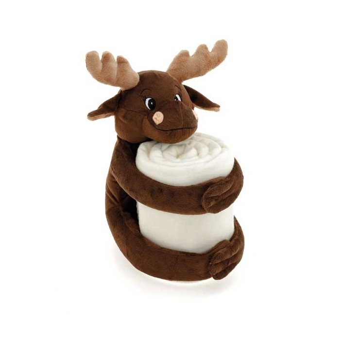
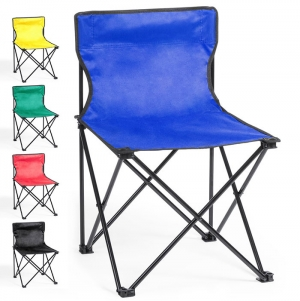
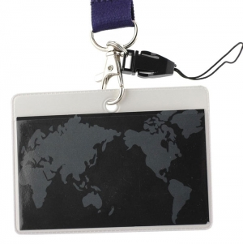
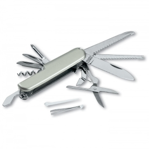
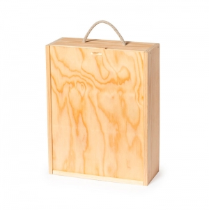

Área de produtos
Papelaria, escritório e escrita
Canetas, lápis, cadernos, agendas, calendários e acessórios para escrever e organizar a secretária.
Canetas e escrita Artigos de escritórioExplore dez áreas pela utilização, construção e personalização. Cada cartão liga a um guia de produto ou a conteúdo relacionado já disponível na biblioteca.
Canetas, lápis, cadernos, agendas, calendários e acessórios para escrever e organizar a secretária.
Canetas e escrita Artigos de escritório
Áudio, carregamento, cabos e suportes: compare funções, ligações e condições de utilização.
Tecnologia
Garrafas, copos, canecas, lancheiras e utensílios: distinga consumo, transporte, preparação e limpeza.
Garrafas, copos e canecas
Compare alças, fechos, compartimentos e espaço útil para o conteúdo que pretende transportar.
Sacos e mochilas
T-shirts, polos, casacos e bonés: conheça os critérios de composição, corte, medidas e cuidados.
Têxteis
Organização, decoração, têxteis para casa e acessórios de cuidado pessoal: conheça funções, formatos e critérios de utilização.
Casa, decoração e cuidados pessoais
Artigos para atividade física, praia, piquenique, jogos e campismo: distinga transporte, conforto e utilização recreativa.
Desporto, lazer e exterior
Fitas, cartões, pulseiras, pins, medalhas e troféus: identifique participantes e prepare momentos de reconhecimento.
Eventos, identificação e prémios
Acessórios de deslocação, lanternas, ferramentas pequenas e artigos de visibilidade: escolha pela tarefa e pela documentação.
Mobilidade, ferramentas e segurança
Caixas, sacos, estojos, separadores e cartões: avalie encaixe, proteção, abertura e apresentação de conjuntos.
Embalagem e apresentaçãoPúblicos, setores profissionais e ocasiões ajudam a definir o uso. Não são famílias de produtos. Explore crianças e contexto escolar em Para quem; procure temas sazonais em Para quem e Tendências.